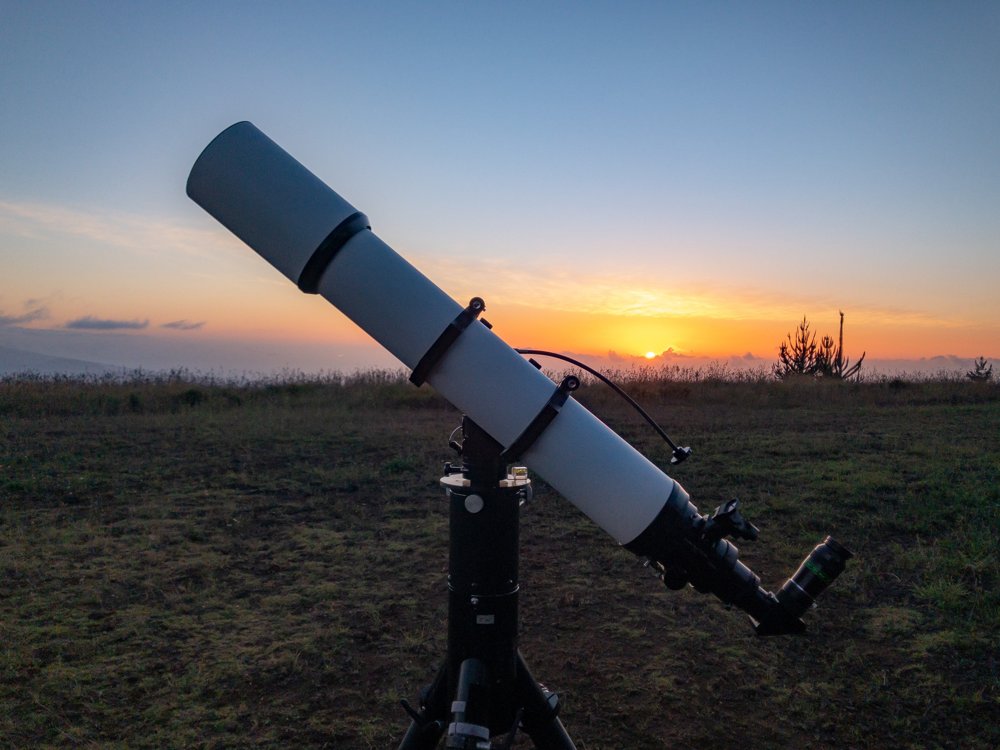

June 12
I got out for a short, low key observing session at the Kaohe site on Friday night. A colleague from work who had expressed interest in coming observing met me up there and we spent the evening checking out some highlights of the spring sky.
It was clear when I arrived before sunset and the views of sunset were beautiful. It was humid for the early part of the night and as it got dark, I could see some ground fog forming around the pu'u just uphill of the observing site. I was worried the clouds would form just above us, but the skies stayed clear and very dark. I took a few SQM readings later in the night and got an average of about 21.9.

The SVX152 set up at Kaohe.
One interesting feature of the night was the sound of military helicopters doing training exercises in "aviation gunnery". I'd heard the helicopters before sunset, but never saw them. After dark, we would hear the gunfire and explosions and could see some of the tracer rounds against the backgrop of Mauna Loa. The tracers were red and looked like lasers from a SciFi movie.
We opened the observing with a few bright globulars: Omega Centauri, M5, and M13. This was in the lingering twilight, but they were bright enough to puch through and show some detail. We revisited Omega Centauri after it got fully dark and it was much more impressive then.
As it got fully dark we switched to some galaxies: M81 & 82, M51, M101. M51 was particularly good with the spiral arms nicely visible.
Given that the Milky Way was low on the south and eastern horizons, we stuck with galaxies for a while. We visited the Sombrero Galaxy which had lovely definition in the dark lane, then jumped over to the Antennae galaxies (NGC 4038 and 4039). The antennae were small, but you could see the V-shaped pairing of the two galaxies. While in Corvus we stopped at the lovely NGC 4361 planetary nebula as well.
When looking at galaxies at this time of year one has to visit the Virgo cluster of course. We stopped at the lovely Needle Galaxy (NGC 4565) and got a nice view of the dark lane cutting through it before hitting Markarian's Chain (M86, M84, "The Eyes") and the galaxies around it including M87 (Virgo A).
Swinging back to the north we visited a couple of planetary nebulae: the Owl (M97) and its neighboring edge on galaxy M108 plus the Cat's Eye (NGC 6543). Then swung south to take a look at the irregularly shaped Bug Nebula (NGC 6302) and the Northern Jewelbox cluster (NGC 6231). With a UHC filter, we could see the diffuse nebula IC 4628 just on the north edge of the loose open cluster Collinder 316.
We finished off the night in the south where the Milky Way was rising. Most of these objects were low, but it was still fun to visit some highlights of the Summer Milky Way.
We hit the globulars M10, M12, and M22. Then lingered on the beautiful Swan Nebula (M17) and Eagle Nebula (M16). The swan was helped a bit by a UHC filter at this low elevation. We checked out the Ink Blot dark nebula which is next to Djorg 2 which I'd always assumed was a dense open cluster, but Sky Safari has it down as a globular. Sliding North just a bit to hit the Lagoon (M8) and Trifid (M20).
We finished the night watching a very fuzzy (due to the low elevation) Io disappear in to Jupiter’s shadow.